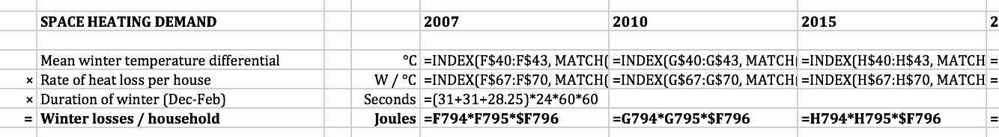

Cellular:
A proposal for better spreadsheets
James Geddes
May 2016
The West Coast Mainline débâcle
It's not just government
Carmen M. Reinhart, Kenneth S. Rogoff (2010). "Growth in a Time of Debt". American Economic Review 100 (2): 573–78.
“George Osborne’s favourite ‘godfathers of austerity’ economists admit to making error in research” — the Mirror
“The Rogoff-Reinhart data scandal reminds us economists aren’t gods” — The Guardian
“The Excel Depression” — Paul Krugman
And some limitations are fundamental

Background to spreadsheet modelling
The challenge of doing better
Cellular
The challenge of doing cellular
Background to spreadsheet modelling
VisiCalc: the first ‘killer app’
Excel has been dominant for 20 years
The challenge of doing better

How do we make good software in general?
The art of programming is the art of organising complexity [...] — Edsger W. Dijkstra (1930–2002)
Controlling complexity is the essense of computer programming. — Brian Kernighan (1942–)
Divide and conquer
Say what you mean
Don’t repeat yourself
How does Excel do on these three measures?
Separation of concerns (aka, divide and conquer)
Don't repeat yourself (aka, generalise) 
Say what you mean (aka, abstract)
=IFERROR(INDEX(INDIRECT($C10 & ".Outputs[" & this.Year & "]"), MATCH(G$5, INDIRECT($C10 & ".Outputs[Vector]"), 0)), 0)
Spreadsheet are ...
Concrete (not abstract)
Specific (not general)
Immediate (not deferred)
The plan
Observe that spreadsheets are already a lot like a simplistic programming language
Write this language explicitly, so that spreadsheets are written as programs (keeping the benefit/cost tradeoff positive!)
Generalise the language to include more powerful features (without losing the ease of use!)
Every spreadsheet is a graph
| A | B |
===+=================+============+
1 | Salary | 21000 |
2 | Allowance | 11000 |
3 | Taxable income | = B1 - B2 |
4 | Basic rate | 0.2 |
5 | Tax payable | = B3 * B4 |From spreadsheet to program
Topological sort:
Then write out each step:
B1 := 21000
B2 := 11000
B3 := B1 - B2
B4 := 0.20
B5 := B3 * B4In my view, the burden of naming is too high. But this language ("grid"?) could be used as a "universal spreadsheet language".
From program to spreadsheet (I)
Conventional function syntax (built-in functions only):
times(0.20, minus(21000, 11000))Then:
- Generate expression graph
- Find its topological sort
- Generate "single static assignment"
- Lay out the result (in some clever way)
Hypothesis: inversion of "data flow programming" mindset familiar to spreadsheet modellers is a barrier. (cf. magrittr in R.)
From program to spreadsheet (II)
Why not just write the spreadsheet as if you were writing a spreadsheet?
21000 ; Salary
11000 ; Personal allowance
- ; = Taxable income
0.20 ; Basic rate
* ; = Tax payable No names; intuitive ordering
Direct translation to spreadsheet graph
But postfix languages haven't caught on. Why not?
Still missing lambda abstractions, iteration, etc. But just as powerful as spreadsheet. Perhaps a good intermediate representation? (Provisional name "nocell".)
How do we add "real" language features?
"Compile" a language to "nocell".
- Unwrap loops, expand functions, ...
Or make "cell" a "nocell"-generating language
"Spreadsheets as values"
More interactive
Uncertainty
Don't reinvent the wheel
Use existing language
Broad architecture
Without uncertainty:
With uncertainty:
Further thoughts
Layout is half the battle but if solved would encourage adoption.
- "LaTeX for spreadsheets"
"Compilation" vs "Generation".
How to represent uncertain parameters in "ordinary" Excel?
- Or compile a "probabilistic 'cell'"?
What I think is necessary for success
Must extend the "natural" language of spreadsheets
Must allow incremental transition from easy to abstract
Must be interactive
- eg, a "REPL" that generates a spreadsheet each time
Must make some tasks easier. eg,
Formatting tables (always a pain);
Make probabilistic calculations possible.
Other proposals
Gencel (templates for Excel)
User-centred functions (SPJ)
ModelSheet Authoring (specific kinds of models)
Tabular
Improv
Scenarios (FW)
UNUSED SLIDES
Other kinds of models
Maximisation
Dynamic simulation
Agent-based simulation
Equilibrium-finding
“Full” Bayesian inference